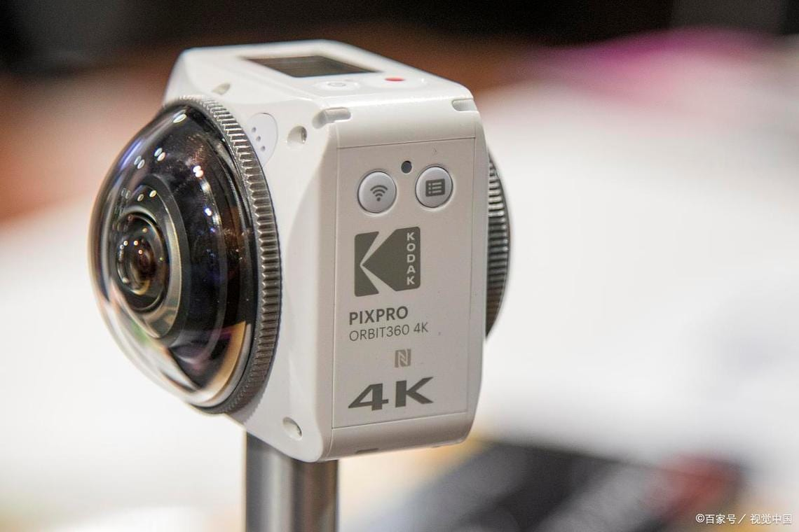

适马 sd Quattro

Foveon 三层感光小众机身，色彩独特的偏科生。
客观评测
适马 sd Quattro 搭载 Foveon X3 三层感光 APS-C 传感器，标称约 2900 万像素，每层独立记录红绿蓝信息，无需低通滤镜，输出影像锐度与色彩过渡独特。缺点明显：高感表现一般，连拍约 3.5 张/秒，视频仅 1080/30p 且发热严重，续航约 200 张。机身造型奇特、重量约 700 克，采用适马 SA 卡口，可转接大量单反镜头，原生镜头群相对有限。
主观点评
sd Quattro 是典型的偏科生：在 ISO 100、光线充足时，它输出的文件有一种接近中画幅的立体感与色彩厚度，被粉丝称作数码反转片。但对焦迟缓、菜单反应慢、续航捉襟见肘，日常使用需要极大耐心。它适合架在三脚架上慢拍风景与静物，而不适合拍了再说的场合。小众到骨子里，也因此格外纯粹。
优点与不足
- 低感成像锐度与色彩渐变独特，接近中画幅观感
- 无需低通滤镜，细节刻画扎实
- 机身做工厚实，双卡槽配置
- 高感表现一般，对焦与响应迟缓
- 视频能力弱且易发热，镜头群有限
参数规格
| 类型 | 适马 SA 卡口可换镜头相机 |
|---|---|
| 传感器 | Foveon X3 三层感光 APS-C 传感器 |
| 像素 | 约 2900 万（三层分别感光） |
| 对焦 | 相位加对比度混合对焦 |
| 连拍 | 约 3.5 张/秒 |
| 快门 | 电子快门，15-1/2000 秒及 B 门 |
| 测光 | 77 区 TTL 测光 |
| 取景 | 约 309 万点电子取景器 + 双显示屏 |
| 视频 | 仅支持 1080/30p，长时间录制易过热 |
| 存储 | 双 SD 卡槽 |
| 重量 | 约 700 克（机身） |